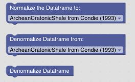
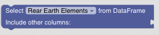
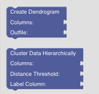

GeoArmadillo Helper Blocks
Helper Blocks perform usefull tasks required for data processing but are not directly part of a specific kind of analysis:

REE Data Normalization and Denormalization
In Geochemistry, REE patterns are often normalized against a reference material or system. The Normalization Blocks use pyrolite to normalize data.
GeoArmadillo has three Blocks performing normalization and denormalization:
The original pyrolite implementation select only the REE/REY data from the data frame and removes the remaining elements. In the GeoArmadillo library, we have extended the function so that only the REE/REY data gets normalized or denormalized and the rest of the data frame remains unchanged. In case, you want to select only the REE data, use the Data Selection Block below.
GeoArmadillo uses attributes on dataframes to store meta information. Therfore, after the Normalization Block, the dataframe “knows” on which dataset it has been normalized. The Denormalize Block does not need additional informations to denormalize this data correctly. If there is normalized data and you want to denormalize it explicitly, use the block with the dropdown.
Data Selection
The Data Selection Block reduces the data frame exclusively to only REE or REY elements. All other columns like sample type, sample location, etc. are removed.
Data Clustering
The Data Clustering Blocks perform Agglomerative Clustering and allow to plot a Dendogram for the results. Look it up on scikit learn to learn more on agglomerative clustering.
